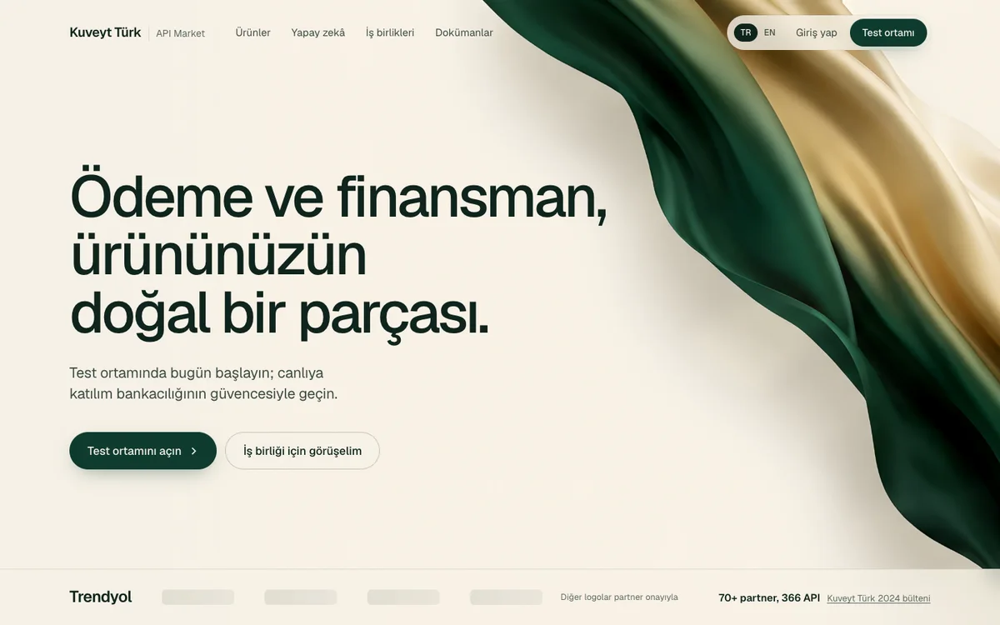
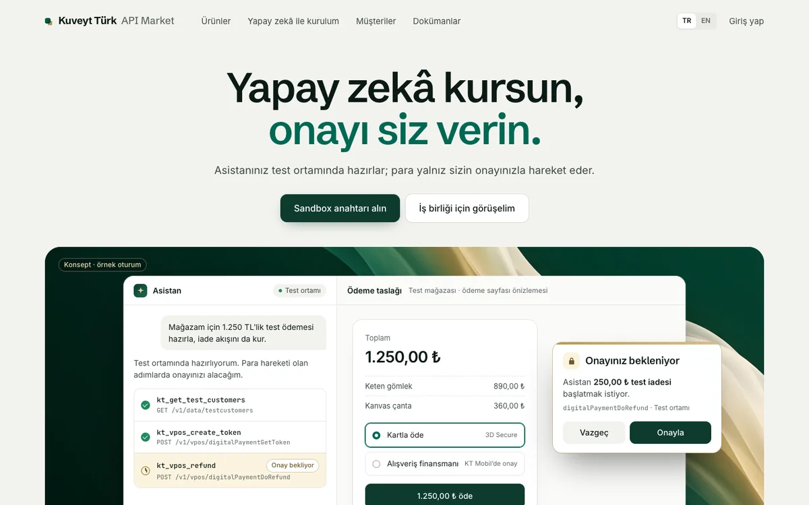

Yön 1 · Akışkan
Sakin, kurumsal ve hareketli bir dil. Hero'da yavaş akan ipek doku; ilk buton doğrudan sandbox (test) anahtarına gider.
Okul projesi · konsept tasarım · Kasım 2026
Kuveyt Türk geliştirici portalını (API Market) baştan sona inceleyip 45 UX/UI bulgusu çıkardım; 12 global ve yerel rakibin yolculuklarını karşılaştırdım. Bu araştırmadan iki tasarım yönü doğdu. İkisi de yapay zekâ ile kurulumu (MCP), ürün sayfalarını ve vaka kurgusunu içeriyor.
Bağımsız bir okul projesidir. Kuveyt Türk ile bağlantısı, onayı ya da iş birliği yoktur. Sayfalardaki rakamlar, alıntılar, test anahtarları ve ikinci vaka örnektir; uç nokta adları portalın herkese açık dokümanından alınmıştır.

Sakin, kurumsal ve hareketli bir dil. Hero'da yavaş akan ipek doku; ilk buton doğrudan sandbox (test) anahtarına gider.

Ürünün kendisini gösteren dil. Hero'da gerçek uç noktalarla kurulmuş bir ödeme ve onay sahnesi.